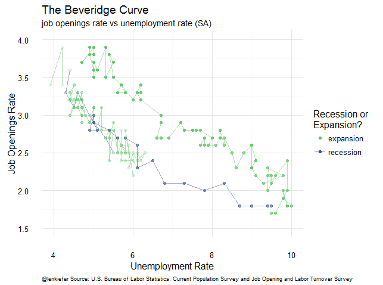
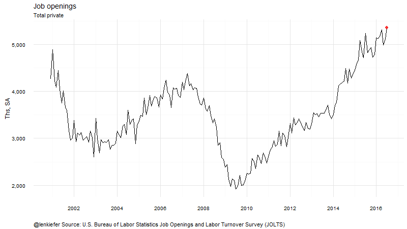
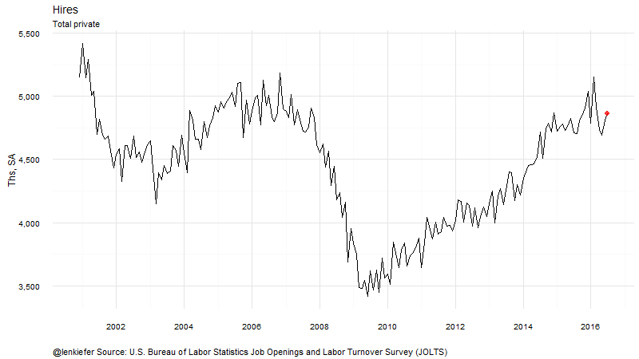

IN THIS POST WE’LL LOOK AT recent job openings and hires data from the Bureau of Labor Statistics Job Openings and Labor Turnover Survey (JOLTS).
R code for selected graphs posted below
Job openings and labor turnover
Total nonfarm trends
Let’s start by looking at aggregate national trends for total nonfarm sector. The plot below compares hires, job openings and separations (the sum of quits, layoffs and discharges, and other separations) over time. The JOLTS data begins in December 2000.
In the latest release for July 2016, total job openings in the U.S. were 5.9 million, the highest recorded. The graph below compares hires, job openings and separations.

Trends by industry
We also can compare trends by industry.

We can break these charts into individual panel plots for hires, job openings and total separations.


Index the data
In order to make comparisons easier, we can index the data so the series can be compared on the same y axis. Due to the spike in hiring due to the 2010 Census, we’ll omit the Federal category in the graphs to come.


The Beveridge Curve
If we add the unemployment rate from the BLS Current Population Survey (CPS) we can draw a Beveridge Curve.

Animated gifs
We can also make animated gif versions of these graphs




R code for graphics
Below is the R code I used to generate the graphs above.
The data are conveniently availabe in text files we can download from the BLS directly. This file gives an overview of the different files, which are located here.
Data Preparations
{% highlight r %}
Load libraries:
library(data.table) library(dplyr) library(tidyr) library(viridis) library(ggplot2) library(ggthemes) library(scales) library(animation) library(tweenr)
Get data from BLS.gov
jolts.dt<-fread(“http://download.bls.gov/pub/time.series/jt/jt.data.1.AllItems") jolts.series<-fread(“http://download.bls.gov/pub/time.series/jt/jt.series") jolts.ind<-fread(“http://download.bls.gov/pub/time.series/jt/jt.industry", col.names=c(“industry_code”,“industry_text”, “display_level”, “selectable”,“sort_sequence”,“blank”)) jolts.element<-fread(“http://download.bls.gov/pub/time.series/jt/jt.dataelement", col.names=c(“dataelement_code”,“dataelement_text”,“display_level”,“selectable”,“sort_sequence”,“blank” ))
Set up data, merge industry names etc.
#ratelevel: R=rate, L=level
#dataelement_code dataelement_text display_level selectable sort_sequence
#HI Hires 0 T 2
#JO Job openings 0 T 1
#LD Layoffs and discharges 1 T 5
#OS Other separations 1 T 6
#QU Quits 1 T 4
#TS Total separations 0 T 3
#region_code region_text display_level selectable sort_sequence
#00 Total US 0 T 1
#MW Midwest (Only available for Total Nonfarm) 1 T 4
#NE Northeast (Only available for Total Nonfarm) 1 T 2
#SO South (Only available for Total Nonfarm) 1 T 3
#WE West (Only available for Total Nonfarm) 1 T 5
#industries ind.list<-unique(jolts.series$industry_code) #industry list ind.list1<-unique(jolts.ind[display_level==1,]$industry_code) #industry level 1 list ind.list2<-unique(jolts.ind[display_level==2,]$industry_code) #industry level 2 list ind.list3<-unique(jolts.ind[display_level==3,]$industry_code) #industry level 3 list reg.list<-unique(jolts.series$region_code) #region list elem.list<-unique(jolts.element$dataelement_code) #data element list
#create data: my.series<-jolts.series[ seasonal==“S” & ratelevel_code==“L” & region_code==“00”, ] my.out<-jolts.dt[ series_id %in% my.series$series_id,] my.out<-merge(my.out,jolts.series[,list(series_id,industry_code,dataelement_code)],by=“series_id”) my.out<-merge(my.out,jolts.ind[,list(industry_code,industry_text)],by=“industry_code”) my.out[,month:=as.numeric(substr(period,2,3))] my.out[,date:= as.Date(ISOdate(year,month,1))]
#Create index to December 2000 (first observations) bdata<-my.out[year==2000 & month==12,] bdata<-dplyr::rename(bdata, value00=value) bdata<-bdata[, c(‘value00’,‘series_id’), with = FALSE] my.out<-merge(my.out,bdata,by=“series_id”) my.out[,val00:=100*value/value00]
#Create index to December 2007 bdata<-my.out[year==2007 & month==12,] bdata<-dplyr::rename(bdata, value07=value) bdata<-bdata[, c(‘value07’,‘series_id’), with = FALSE] my.out<-merge(my.out,bdata,by=“series_id”) my.out[,val07:=100*value/value07]
#order the industries by employment in 2000 my.out<-my.out[order(date,-value00),] #Create factor (for plot facets) my.out[,industry_textf:=factor(industry_text,levels=unique(my.out$industry_text))] {% endhighlight %}
Make the plots
{% highlight r %}
Total nonfarm plot
ggplot(data=my.out[industry_code==00000 & dataelement_code %in% c(“HI”,“JO”,“TS”),], aes(x=date,y=value,color=dataelement_text))+ facet_wrap(~dataelement_text)+scale_y_continuous(label=comma)+ scale_color_viridis(name=“”,discrete=T,end=0.8)+ theme(strip.text.x = element_text(size = 8))+ geom_line(size=1.1)+ theme_minimal()+theme(legend.position=“none”)+ theme(plot.caption=element_text(hjust=0,size=7))+ theme(strip.text.x = element_text(size = 8))+ labs(x=“”, y=“”, subtitle=“Total Nonfarm, (Ths, Seasonally-Adjusted)”, title=“Hires, Job Openings, and Separations “, caption=“@lenkiefer Source: U.S. Bureau of Labor Statistics Job Openings and Labor Turnover Survey (JOLTS)“)
Hires, Job Openings and Separations by Inudstry plot
ggplot(data=my.out[industry_code %in% ind.list2 & dataelement_code %in% c(“HI”,“JO”,“TS”),], aes(x=date,y=value,color=dataelement_text))+ facet_wrap(~industry_textf,scales=“free_y”)+ scale_y_continuous(label=comma)+ scale_color_viridis(name=“”,discrete=T,end=0.8)+ theme(strip.text.x = element_text(size = 8))+ geom_line(size=0.75)+ theme_minimal()+theme(legend.position=“top”)+ theme(plot.caption=element_text(hjust=0,size=7))+ theme(strip.text.x = element_text(size = 7))+ theme(axis.text.x = element_text(size=7), axis.text.y = element_text(size=7) ) + labs(x=“”, y=“Ths, Seasonally-adjusted”, subtitle=“by industry”, title=“Hires, Job Openings, and Separations “, caption=“@lenkiefer Source: U.S. Bureau of Labor Statistics Job Openings and Labor Turnover Survey (JOLTS)“)
ggplot(data=my.out[ industry_code %in% ind.list2 & dataelement_code==“HI”,],
aes(x=date,y=value,color=industry_text))+
facet_wrap(~industry_textf,scales=“free_y”)+
geom_line(size=0.85)+
theme_minimal()+theme(legend.position=“none”)+
scale_x_date(limits=c(min(d.list2),max(d.list2)))+
theme(plot.caption=element_text(hjust=0,size=7))+
theme(strip.text.x = element_text(size = 7))+
theme(axis.text.x = element_text(size=7),
axis.text.y = element_text(size=7) ) +
labs(x=“”, y=“Ths, Seasonally-adjusted”,
subtitle=“by industry”,
title=“Hires (Ths, Seasonally-Adjusted)”,
caption=“@lenkiefer Source: U.S. Bureau of Labor Statistics Job Openings and Labor Turnover Survey (JOLTS)“)
ggplot(data=my.out[ industry_code %in% ind.list2 & dataelement_code==“JO”,],
aes(x=date,y=value,color=industry_text))+
facet_wrap(~industry_textf,scales=“free_y”)+
theme(strip.text.x = element_text(size = 8))+
geom_line(size=0.85)+
theme_minimal()+theme(legend.position=“none”)+
#scale_x_date(limits=c(min(d.list2),max(d.list2)))+
scale_x_date(limits=c(as.Date(“2007-12-01”),max(d.list)))+
theme(plot.caption=element_text(hjust=0,size=7))+
theme(strip.text.x = element_text(size = 7))+
theme(axis.text.x = element_text(size=7),
axis.text.y = element_text(size=7) ) +
labs(x=“”, y=“Ths, Seasonally-adjusted”,
subtitle=“by industry”,
title=“Job Openings (Ths, Seasonally-Adjusted)”,
caption=“@lenkiefer Source: U.S. Bureau of Labor Statistics Job Openings and Labor Turnover Survey (JOLTS)“)
ggplot(data=my.out[ industry_code %in% ind.list2 & dataelement_code==“TS”,],
aes(x=date,y=value,color=industry_text))+
facet_wrap(~industry_textf,scales=“free_y”)+
theme(strip.text.x = element_text(size = 8))+
geom_line(size=0.85)+
theme_minimal()+theme(legend.position=“none”)+
#scale_x_date(limits=c(min(d.list2),max(d.list2)))+
scale_x_date(limits=c(as.Date(“2007-12-01”),max(d.list)))+
theme(plot.caption=element_text(hjust=0,size=7))+
theme(strip.text.x = element_text(size = 7))+
theme(axis.text.x = element_text(size=7),
axis.text.y = element_text(size=7) ) +
labs(x=“”, y=“Ths, Seasonally-adjusted”,
subtitle=“by industry”,
title=“Total Separations (Ths, Seasonally-Adjusted)”,
caption=“@lenkiefer Source: U.S. Bureau of Labor Statistics Job Openings and Labor Turnover Survey (JOLTS)“)
{% endhighlight %}
Index the data and and plot
{% highlight r %} ggplot(data=my.out[(industry_code==100000 |(industry_code !=910000 & industry_code %in% ind.list2) ) & dataelement_code==“HI”,], aes(x=date,y=val07,color=industry_text))+ facet_wrap(~industry_textf)+ theme(strip.text.x = element_text(size = 8))+ scale_y_continuous(limits=c(0,250),breaks=seq(0,350,50))+ geom_ribbon(alpha=0.5,aes(ymin=100,ymax=val07,fill=industry_text),color=NA)+geom_line(size=0.85)+ theme_minimal()+theme(legend.position=“none”)+geom_hline(yintercept=100,linetype=2,color=“black”,size=0.75)+ scale_x_date(limits=c(min(d.list2),max(d.list2)))+ theme(plot.caption=element_text(hjust=0))+ theme(strip.text.x = element_text(size = 8))+ labs(x=“”, y=“Index, Dec 2007=100”, subtitle=“by industry”, title=“Hires (Seasonally-Adjusted Index, Dec 2007=100)”, caption=“@lenkiefer Source: U.S. Bureau of Labor Statistics Job Openings and Labor Turnover Survey (JOLTS)“)
ggplot(data=my.out[(industry_code==100000 |(industry_code !=910000 & industry_code %in% ind.list2) )& dataelement_code==“JO”,], aes(x=date,y=val07,color=industry_text))+ facet_wrap(~industry_textf)+ scale_y_continuous(limits=c(0,250),breaks=seq(0,350,50))+ geom_ribbon(alpha=0.5,aes(ymin=100,ymax=val07,fill=industry_text),color=NA)+geom_line(size=0.85)+ theme_minimal()+theme(legend.position=“none”)+geom_hline(yintercept=100,linetype=2,color=“black”,size=0.75)+ scale_x_date(limits=c(min(d.list2),max(d.list2)))+ theme(plot.caption=element_text(hjust=0,size=7))+ theme(strip.text.x = element_text(size = 8))+ labs(x=“”, y=“Index, Dec 2007=100”, subtitle=“by industry”, title=“Job Openings (Seasonally-Adjusted Index, Dec 2007=100)”, caption=“@lenkiefer Source: U.S. Bureau of Labor Statistics Job Openings and Labor Turnover Survey (JOLTS)“)
ggplot(data=my.out[(industry_code==100000 |(industry_code !=910000 & industry_code %in% ind.list2) )& dataelement_code %in% c(“HI”,“JO”)], aes(x=date,y=val07,color=dataelement_code))+ facet_wrap(~industry_textf)+ scale_color_viridis(name=“Hires (Hi) and Job Openings (JO)”,discrete=T,end=0.75,begin=0.25)+ scale_linetype_discrete(guide=FALSE)+ scale_y_continuous(limits=c(0,250),breaks=seq(0,350,50))+ #geom_ribbon(alpha=0.5,aes(ymin=100,ymax=val07,fill=dataelement_code),color=NA)+ geom_line(size=0.85)+
theme_minimal()+theme(legend.position="bottom")+geom_hline(yintercept=100,linetype=2,color="black",size=0.75)+
scale_x_date(limits=c(as.Date("2007-12-01"),max(d.list)))+
theme(plot.caption=element_text(hjust=0,size=7))+
theme(strip.text.x = element_text(size = 8))+
labs(x="", y="",
subtitle="Seasonally-Adjusted Index, Dec 2007=100",
title="Hires and Job Openings by industry",
caption="@lenkiefer Source: U.S. Bureau of Labor Statistics Job Openings and Labor Turnover Survey (JOLTS)")
{% endhighlight %}
Beveridge Curve code
For the Beveridge Curve I need to get the CPS data. We can read it from a flat file, but because I was just looking for the aggregate series I downloaded from the BLS page and stored it along with the national total nonfarm job openings rate in a simple text file. You can follow the links below to get the data:
{% highlight r %}
Load data from text file.
data can be found here: http://www.bls.gov/data/
bv<-fread(“data/bv.txt”) bv$date<-as.Date(bv$date, format=“%m/%d/%Y”) bv$id<-factor(bv$id,levels=unique(bv$id))
Draw Plot
ggplot(data=bv,aes(y=jo.rate,x=ur.rate,color=rec,group=code))+
geom_point(aes(alpha=as.numeric(date)/as.numeric(d.list[i])))+
scale_alpha_continuous(guide=F)+
theme_minimal()+coord_cartesian(xlim=c(4,10),ylim=c(1.5,4))+
scale_color_viridis(name="Recession or\nExpansion?",discrete=T,direction=-1,option="D",end=0.75,begin=0.25)+
geom_path(alpha=0.5)+
theme(plot.caption=element_text(hjust=0,size=7))+ labs(x=“Unemployment Rate”,y=“Job Openings Rate”, title=“The Beveridge Curve”, subtitle=“job openings rate vs unemployment rate (SA)”, caption=“@lenkiefer Source: U.S. Bureau of Labor Statistics, Current Population Survey and Job Opening and Labor Turnover Survey”) {% endhighlight %}
Animation
The animated charts were made using a combination of the animation and tweenr packages for R.
See my earlier post about tweenr for an introduction to tweenr, and more examples here and here.
{% highlight r %} #gifs are made in the usual fashion, like so:
d.list2<-unique(my.out[date>=“2007-12-01”,]$date) N<-length(d.list2) oopt = ani.options(interval = 0.1) saveGIF({for (i in 1:N) { g<- ggplot(data=my.out[(industry_code==100000 |(industry_code !=910000 & industry_code %in% ind.list2) )& date<=d.list2[i] & dataelement_code==“JO”,], aes(x=date,y=val07,color=industry_text))+ facet_wrap(~industry_textf)+ #scale_y_continuous(limits=c(25,150),breaks=seq(25,175,25))+ scale_y_continuous(limits=c(0,250),breaks=seq(0,350,50))+ geom_ribbon(alpha=0.5,aes(ymin=100,ymax=val07,fill=industry_text),color=NA)+geom_line(size=0.85)+ theme_minimal()+theme(legend.position=“none”)+geom_hline(yintercept=100,linetype=2,color=“black”,size=0.75)+ scale_x_date(limits=c(min(d.list2),max(d.list2)))+ theme(plot.caption=element_text(hjust=0))+ #scale_y_log10()+ labs(x=“”, y=“Index, Dec 2007=100”, subtitle=“by industry”, title=“Job Openings (Index: Dec 2007=100, Seasonally-adjusted)“, caption=“@lenkiefer Source: U.S. Bureau of Labor Statistics Job Openings and Labor Turnover Survey (JOLTS)“) print(g) print(i) ani.pause() } for (i2 in 1:10) { print(g) ani.pause() } },movie.name=“tween jolts jo industry.gif”,ani.width = 800, ani.height = 450) {% endhighlight %}